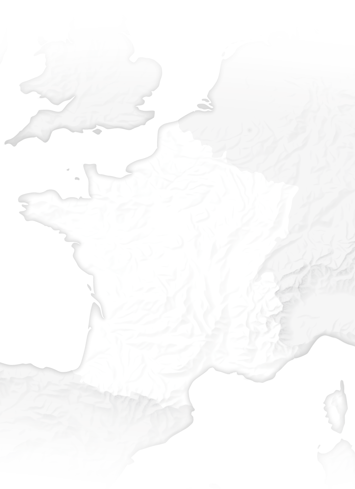

Exercice technique réalisé pour une candidature au poste de journaliste carto/data chez Vert, septembre 2026.
Mobilisation · 26 septembre 2026
Chaque cercle est proportionnel au nombre de participants déclaré par les organisateurs locaux. Survolez ou touchez une mobilisation pour le détail, ou cherchez une ville.

À lire : les chiffres sont ceux des organisateurs, remontés ville par ville au mouvement du 26 septembre. Ils n'ont pas été vérifiés de façon indépendante et peuvent différer des comptages de la presse ou des autorités.
Source : bilan du mouvement du 26 septembre ·
Carte : Sébastien EID
Je suivais l'appel à marcher « pour le climat, le vivant, la paix et la justice sociale » du samedi 26 septembre, soutenu par plus de 1 000 organisations. Dans son bilan, le mouvement annonce « plus de 130 000 personnes ». Ma question : où ces personnes ont-elles marché ? Seulement dans les grandes villes, ou partout ?
Le mouvement publie un bilan ville par ville : chaque groupe local y indique son nombre de participants. C'est la seule source que j'ai trouvée qui couvre toutes les mobilisations.
Les chiffres sont-ils fiables ? Je les ai comparés à la presse locale (franceinfo, radios ICI). Les écarts sont parfois forts : à Grenoble, 8 000 selon les organisateurs, « près de 2 500 » selon ICI Isère. La presse ne couvre qu'une dizaine de villes, avec des méthodes différentes. J'ai donc gardé une seule source, les organisateurs, et je l'indique clairement dans le titre et les bulles.
La page du bilan n'offre pas de fichier à télécharger. À l'aide d'un script Python qui lit la page HTML et extrait les lignes du tableau, j'ai récupéré la donnée dans un fichier csv. En relançant le script, on peut mettre à jour nos données.
Les 40 villes sans chiffre sont gardées, mais marquées comme « non communiqué ». Pour placer chaque ville sur la carte (géocodage), l'API officielle des communes donne les coordonnées de chaque ville à partir de son nom et de son département.
J'ai réutilisé un fond de carte réalisé pour un précédent projet (carte BRGM sur mon portfolio), avec son système de positionnement, en version mobile et desktop. La surface des cercles est proportionnelle au nombre de participants. C'est la manière la plus adéquate pour représenter ce type de données. Les cercles les plus grands sont dessinés en dessous afin de garder visibles les plus petits. Le tooltip donne le chiffre exact de chaque ville lorsque l'on passe dessus. Quelques informations précèdent la carte : des chiffres clefs pour donner du contexte, et la légende pour lire la carte correctement. Outils : HTML, CSS et JavaScript, sans librairie, aux couleurs de Vert.
Partie 2 · Proposition de cartes
Je ferais deux cartes. Une carte interactive de la France face à la montée des eaux, et une carte statique sur un exemple en outre-mer, où le risque est déjà là.
Une carte interactive des côtes françaises, outre-mer compris, qui montre les zones sous l'eau en 2050 et en 2100 selon trois scénarios du Giec : optimiste, moyen et pessimiste. On passe d'un scénario à l'autre avec un bouton.
À Saint-Pierre-et-Miquelon, le village de Miquelon est au niveau de la mer. Il est en train d'être reconstruit plus haut, à environ un kilomètre, et environ 600 habitants vont devoir déménager. La carte montrerait l'ancien village, le nouveau, et ce qui doit être déplacé (maisons, aéroport, centrale électrique, église).
Les projections du Giec sont téléchargeables sur l'outil de la Nasa. Le relief des côtes vient de l'IGN. Pour Miquelon, les documents du projet de déménagement du village.
Les projections du Giec changent à chaque nouveau rapport, tous les six à sept ans. Les données de l'IGN sont mises à jour régulièrement. La carte de Miquelon se refait à chaque étape du chantier.
Partie 3 · Proposition de datavisualisation
Faire une datavisualisation sur les votes du RN sur les sujets de santé et d'environnement pourrait être piégeux. Les votes pour ou contre dépendent du contexte : si une loi sur la santé est proposée par le RN, ses députés votent a priori pour. Cela n'indique en rien que le RN a servi ou desservi la santé, puisque cela dépend directement de la loi votée.
Il faut donc repartir de la loi votée.
À la limite, on peut avoir un bilan avec le total des lois votées pour, contre ou en s'abstenant. Mais le détail doit toujours être derrière, sinon ça ne veut rien dire.
Le portail data.assemblee-nationale.fr publie tous les scrutins publics de la législature (fichier Scrutins.json, mis à jour chaque nuit) : l'objet du vote, le résultat, la position de chaque groupe et le vote de chaque député. Un second fichier donne l'identité des députés, leur groupe et leur circonscription. Le même portail publie les dossiers législatifs et les amendements, avec leur auteur et l'exposé des motifs. On peut donc relier chaque vote à sa loi et savoir qui l'a déposée.
On filtre les textes examinés par les commissions concernées (développement durable, affaires sociales, affaires économiques pour l'agriculture et l'énergie) et par mots-clés dans l'intitulé (pesticide, PFAS, climat, eau, pollution, biodiversité, nucléaire…).
On part d'un schéma de l'Assemblée nationale où chaque député est un point. Les points sont regroupés par parti, et leur couleur indique le vote : pour, contre ou abstention. Autre possibilité, centrée sur le RN : de simples ronds ou carrés, un par député RN, colorés selon son vote.
Utilisation de l'IA : j'ai utilisé l'IA pour écrire le script d'extraction des données et pour mettre en forme mes textes (liens vers les sources, touches de couleur).